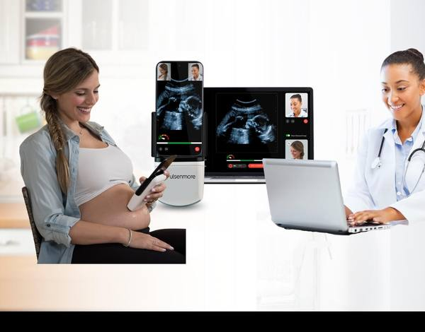

Illustrative imageA hand-sized ultrasound docks with her phone. She scans at home; a clinician reviews the scan.
35%
of U.S. counties are maternity care deserts (March of Dimes, as cited)
<5 min
app-guided scan, per the company
HOLA, 162 women analyzed at four U.S. centers. Per the company’s 20-F, its FDA de novo authorization (Oct 31, 2025) covers fetal heart rate.
99.2% and 97.2%
Fetal heart rate visualized, clinician- and app-guided. Targets met
80.0% and 91.6%
Amniotic fluid specificity, clinician- and app-guided. Target met
69.3% and 49.3%
Amniotic fluid sensitivity, against a 70% target. Not met
Six months to June 30, 2026. Unaudited, in New Israeli Shekels as filed.
NIS 6.1M
Revenue, vs NIS 4.0M in H1 2025 (+52%)
NIS 20.8M
Operating loss
NIS 17.6M
Cash used in operations
NIS 69.8M
Cash and deposits, Jun 30
About 93% of 2025 product revenue came from one customer. Warrants are carried as liabilities.
Forward-looking statements: U.S. launch and reimbursement, any wider FDA indication, funding needs, continued losses and reliance on one customer. Figures from the company’s 20-F and 6-K (NIS as filed; H1 2026 unaudited); third-party figures as cited. Warrants cover 3.1M shares (about 48% of the 6.5M outstanding at Mar 15, 2026) and are carried as liabilities. Not an offer. See SEC filings for risks.